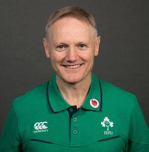
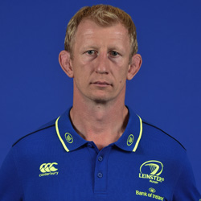
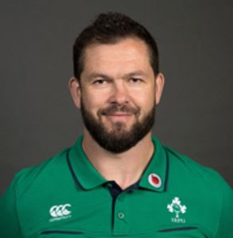
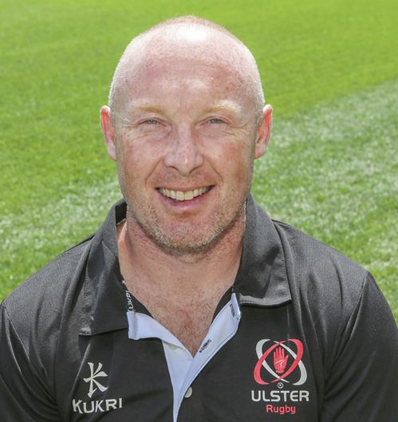
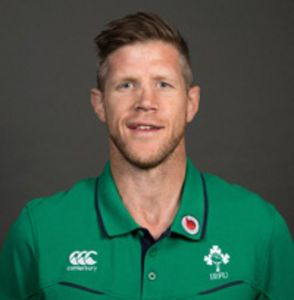
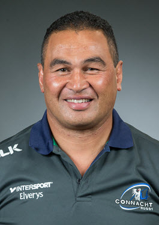
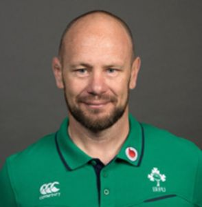

Joe Schmidt - Ireland Head Coach
 A former school teacher and coach Joe worked in several coaching roles in New Zealand including New Zealand Schools, Bay of Plenty and at Auckland as assistant coach.He was backs coach at Clermont Auvergne from 2007 to 2010 when the club captured the coveted Bouclier de Brennus Top 14 title.Joe took over as Leinster head coach for the 2010/11 season and guided the province to their second Heineken Cup title in his first season.Leinster won back to back European titles in 2012 and Joe signed off his tenure with Leinster by guiding them to a treble in 2013 capturing the Amlin Challenge Cup, Rabo Direct Pro12 and British & Irish Cup titles.
Leo Cullen - Leinster Head Coach
Former Leinster captain Leo Cullen made his bow for the province in the same season as teammate Gordon D’Arcy but a two season stint in England means the Wexford centre holds a caps advantage over the passionate Newtownmountkennedy lock. With his years of experience in the game, Cullen was asked to join the Leinster backroom staff by head coach Matt O’Connor after his retirement and he became the Leinster forwards coach in July 2014. With the departure of O’Connor a season later, Cullen was appointed Leinster Rugby Head Coach in August 2015 and led the province to the top of the Guinness PRO12 table and to the PRO12 Final in his first season in charge.
Andy Farrell - Defence Coach
Andy was assistant coach with England from 2011 to 2015 as well as defence coach for the 2013 Series-winning British & Irish Lions tour to Australia. Previous to joining the England set-up, he coached Aviva Premiership side Saracens. A dual code player, he played rugby league for Wigan (370 caps), England (11 caps) and Great Britain (34 caps) before switching to union and joining Saracens. Farrell won eight caps for England, including three appearances at the 2007 Rugby World Cup.
Neil Doak - Ulster Head Coach
Neil has an almost 20 year association with the Province. He made his debut as a player in 1995 against Northern Transvaal and went on to make 76 appearances for Ulster before retiring in 2005.He began coaching while still a player, becoming an Ulster Branch development officer in 2000. Following his retirement he worked with Academy players as a high performance coach. He led the Ulster U19, U20 and 'A' sides and was quickly promoted to the senior set-up where he took up a role as elite player development officer. He became backs coach in 2009 and is credited with transforming Ulster Rugby and was later appointed Ulster Rugby Head Coach in October 2014.
Simon Easterby - Forwards Coach
Simon Easterby is a forwards Coach. He is a former Ireland captain, Simon played 65 times for Ireland between 2000 and 2008 and was a member of the British & Irish Lions tour squad in 2005. Easterby played with Llanelli Scarlets and became part of the coaching setup on his retirement. He served as head coach from 2012 until joining the Ireland set up. He is still a member of the Irish setup today, four years down the line.
Pat Lam - Connacht Head Coach
Lam's first managerial position was as an assistant coach to Scotland at the 2003 Rugby World Cup. He was head coach of Auckland from 2004 until 2008. During his Auckland tenure he also coached the Pacific Islanders in 2006. He was head coach of Super Rugby team the Blues from 2009 to 2012. He worked with Samoa on the team's 2012 tour. Samoa's victories saw it reach eighth in the IRB rankings, and a secure second tier position for the 2015 Rugby World Cup. Lam was appointed as head coach of the Pro 12 side, Connacht Rugby in Ireland, ahead of the 2013 to 2014 season.On 28 May, 2016, Connacht won their first ever major trophy, the 2015 to 2016 Pro12 final.
Greg Feek - Scrum Coach
Greg was capped by New Zealand 10 times at prop, playing against Ireland in 2001, and also played for the Canterbury Crusaders 63 times in the Super 14. After retiring from playing due to injury in 2006, he moved into coaching with the Wellington Hurricanes as assistant forwards coach. He joined Leinster at the beginning of 2010/11 season as a consultant scrum coach and has been working with the Ireland team since the Guinness Series in November 2010. Greg was appointed National Scrum Coach in 2014.